We make a maintenace screw check in the morning and screw the luggage carrier tighter. The rear tire only has 0.7 bar and is pumped up to 2.0 bar with a loaned pump.

We take our time in the morning and after breakfast Andre and Martin leave first. We stay longer to tinker with the bikes.
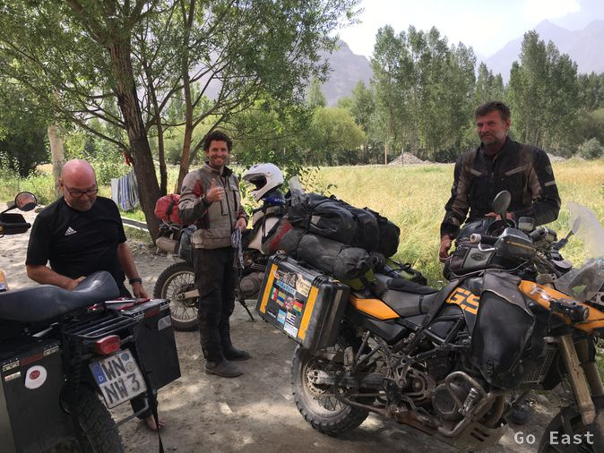
A short time later, Martin comes back, because he has a flat tire.
2 cars from the Mongol Rally also arrive. 4 people from Australia in a car. We have a short chat.

After the screw repairs, we take Martin to the gas station, where you can also have tires mended. Fueled from the Gazprom keg and filled with the 10 liter jug and funnel. We each take 20 l, so as not to be too heavy because the track is supposed to be very bad.


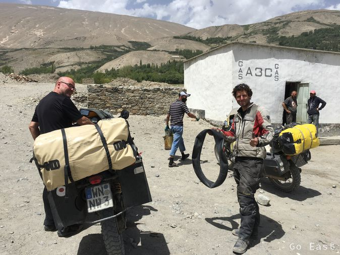
We head out and it start off equally well with a steep hairpin bend with boulders. It goes steadily uphill and after 20km and 1 hour later we meet Andre. We tell him the situation and he decides to drive back and start again tomorrow with Martin.
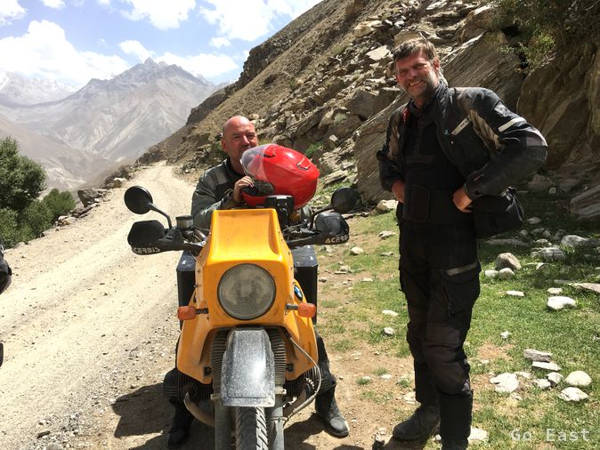
The track is very exhausting and we take a break several times. washboard piste, loose gravel and soft gravel alternate and are also available different combination. We continue to follow the Pandsch upriver.
Birds and insects are at 3,600m altitude, so the visor I keep closed because there are still larger insects on the way.
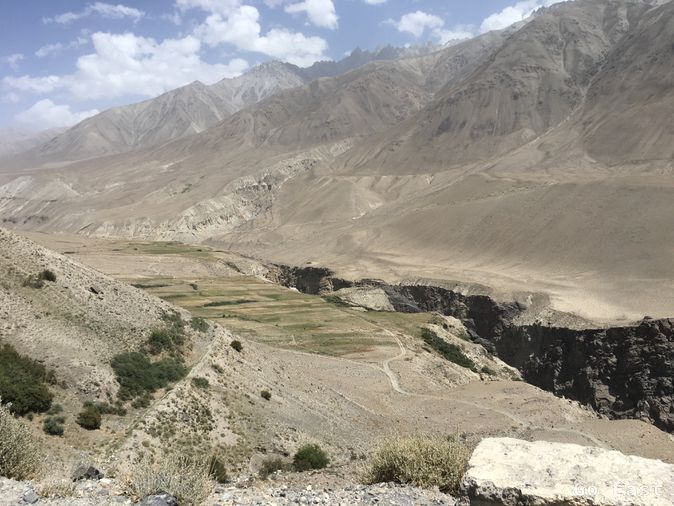
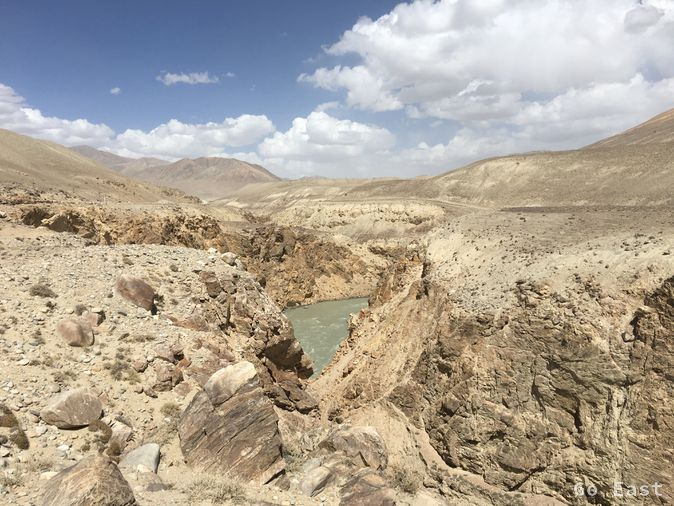
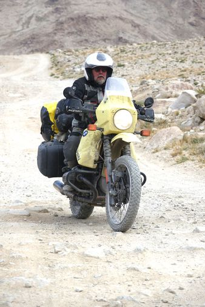
In a soft spot I can not dodge a sand hill fast enough and hang with the left cylinder. I make an elegant left turn on the spot and the bike is in the sand. Since Charlie has already driven on, I unload all the luggage to set up the machine, which finally succeeds me. Charlie has meanwhile returned and so the machine is loaded together again. It can work that way if you have a short loss of control.

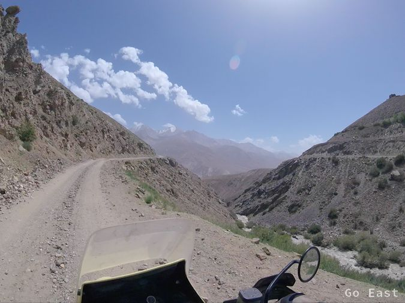
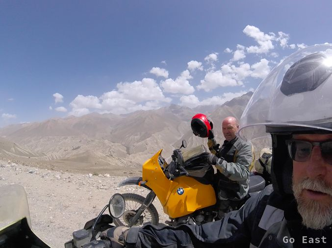
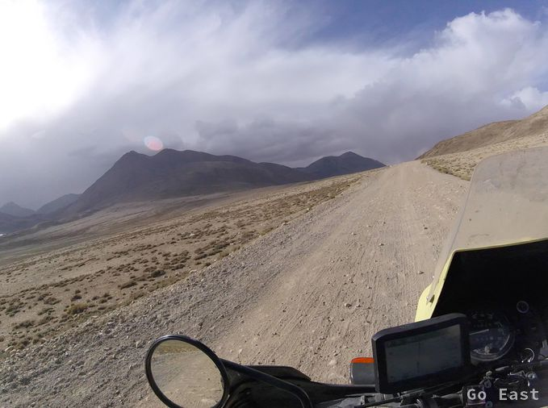


After some time, we reach a checkpoint that checks our passports. We are now at 4,200m and the temperature has dropped to 20 degrees. We turn north and leaving behind the some 100km of the Pandsch which runs further to the east. We meet cattle with shepherds at this height and two cyclists from Leibzig, who want to cycle to Dushanbe.
The jackets are closed and we notice that the zippers are clogged with dusty silt and can hardly be moved. After the pass we descend slowly to 3.800m at a reduced slope until we reach the tarred road M41.

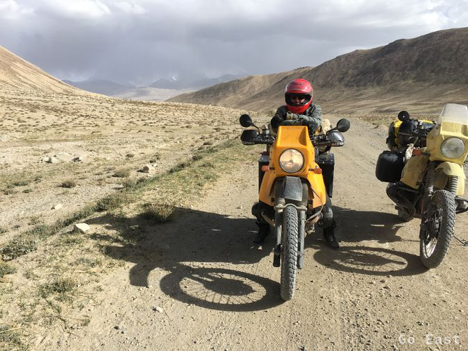

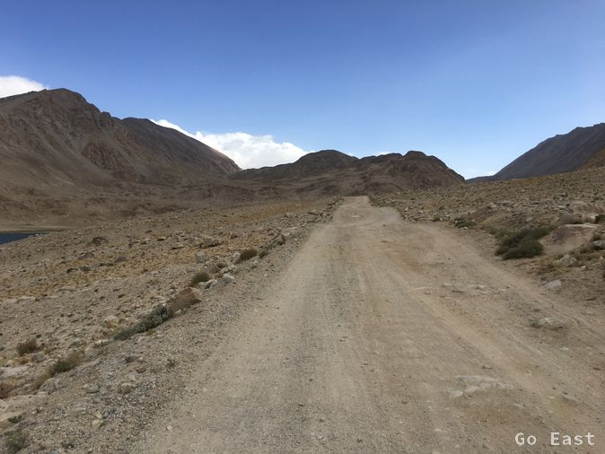


The 100 km track has taken us 6 hours. We think for a moment, if we should start the remaining 120km to Murghab. Unfortunately, the tarmac at best allows a cut of 50km / h, as it has strong bumps.
The remaining daylight would not reach to Murghab, so we head for the next homestay. There is bed, shower, dinner and breakfast for 15, - USD. Toilet (outhouse) over the yard. Shower with water tank and ladle, bed is eliminated and replaced with mattress on the floor. Good as well. There is soup, sheep, fish and beer again. That's all it takes. We feel baked like bread. At 8:00 pm is bed rest.
No WiFi, no network, no post, no charging, electricity is only available from the 12V battery and solar panels.
The altitude of 3,800m is causing us some extra effort. On the way to the outhouse at night (corrugated iron shing with wooden floor and hole in the floor), there is always the fear that the smartphone, which serves as a flashlight, could also flop into the hole. Just the thought of it, makes you wide awake and highly concentrated. :-)


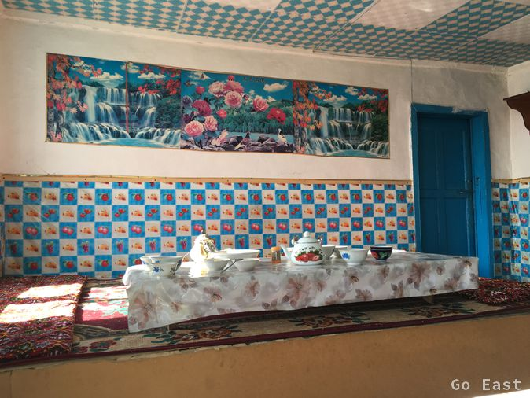